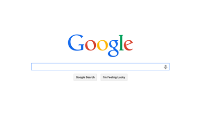
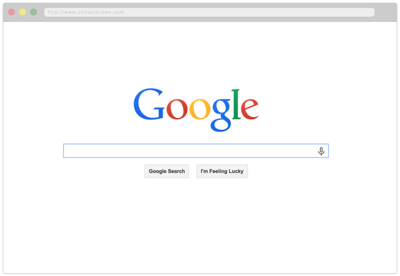

Display your screencaps in a mock browser window for presentations and UX mockups using pure CSS.
Wrap your <img/> tag in a div with class .browser-mock will turn this:
<img/>
.browser-mock

into:

download css